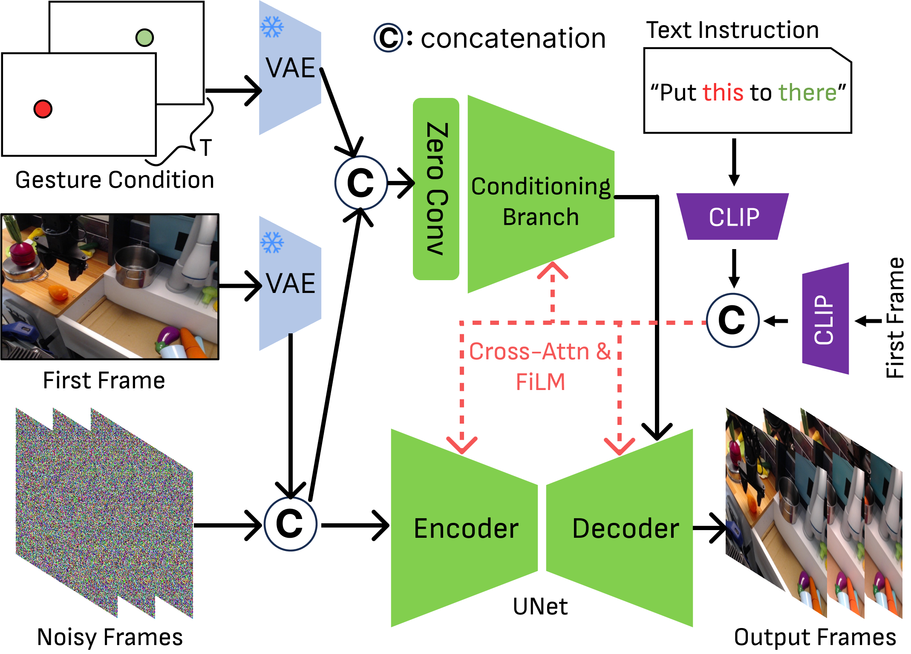
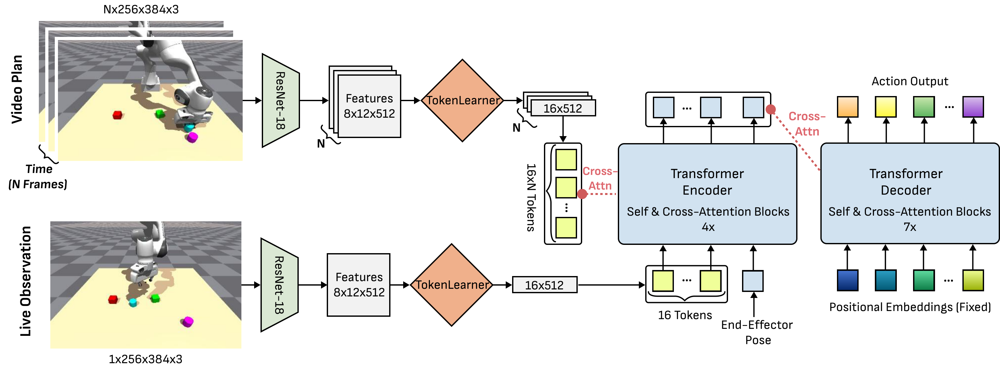
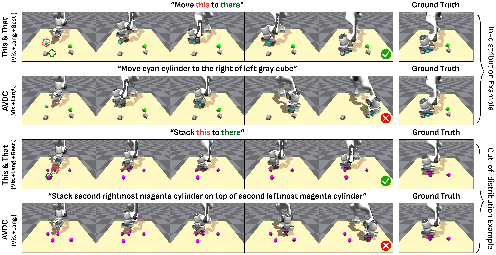
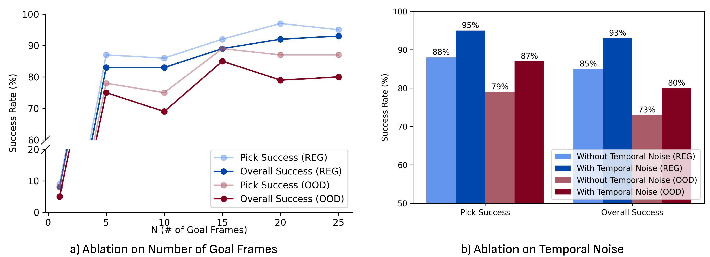
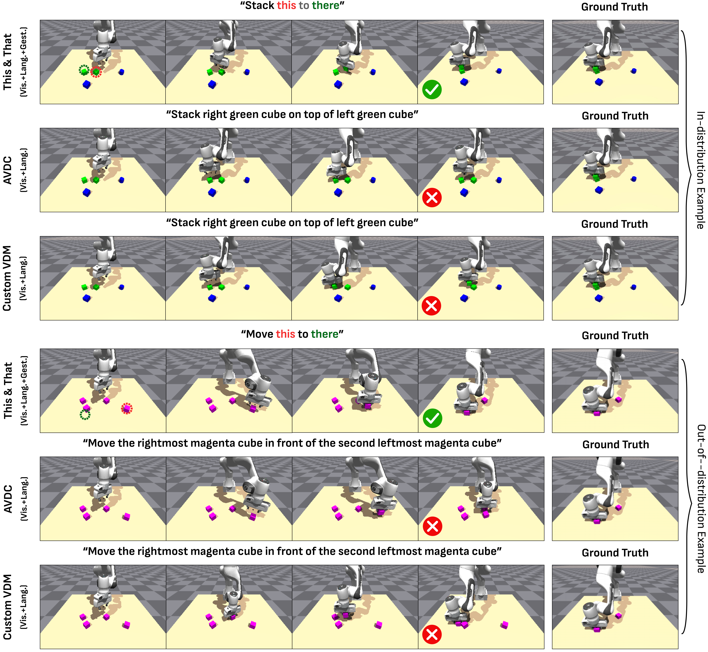

This&That: Language-Gesture Controlled Video Generation for Robot Planning
1. Quick overview of the paper
| quick review questions | concise answer |
|---|---|
| What should the paper solve? | Video generation can be used as a robot plan, but language-only instructions are often ambiguous in complex or uncertain scenarios, especially deictic language such as "put this there." What the paper wants to solve is: how to control the video plan unambiguously using simple human language and pointing gestures, and convert the plan into robot actions. |
| The author's approach | Two modules: one is a language-gesture conditioned VDM fine-tuned based on Stable Video Diffusion, which uses the initial frame, text and two 2D gesture points to generate a video plan; the other is DiVA, a video-conditioned behavior cloning Transformer, which uses video plan tokens and real-time observation cross-attention to output action chunks. |
| most important results | In terms of Bridge video quality, Ours reaches FID 17.28, FVD 84.58, PSNR 21.71, SSIM 0.787, LPIPS 0.112, all better than SVD, StreamingT2V, DragAnything and AVDC; in Isaac Gym rollout, the complete Video-based (V.+Lang.+Gesture) reaches Pick in ID/OOD scenes 95/87, Place 93/80, significantly higher than the language-only version. |
| Things to note when reading | This paper is not a long-range planning paper, but an "instruction disambiguation + video conditional execution" paper in single-step/modular tasks. Its real-robot part only evaluates the quality of video generation, and the action execution experiment is currently in Isaac Gym simulation; therefore, it is necessary to distinguish between "video generation aligned with real robot data" and "real robot closed-loop execution". |
Difficulty rating: ★★★☆☆. Need to be familiar with latent video diffusion, ControlNet/FiLM/CLIP conditioning, behavior cloning, ACT/Transformer policy, robot vision data set and rollout evaluation.
Keywords: language-gesture conditioning, deictic language, video diffusion model, Stable Video Diffusion, DiVA, video-conditioned behavior cloning, Bridge dataset, Isaac Gym.
Core contribution list
- Verbal-gestural condition VDM.Fine-tune the robot video based on SVD and add sparse gesture conditioning so that the model can understand "this/that/there".
- Automatic gesture annotation process.Automatically recover pick/release gesture points from real data using Bridge metadata, YoloV8 gripper detector and TrackAnything.
- DiVA execution model.The generated video is used as a dense visual goal sequence, and real-time observation is combined through TokenLearner compression and cross-attention to output action chunks.
- Systematically verifying the value of gestures.User alignment, video quality, VDM ablation, DiVA ablation and simulation rollout all show that language+gesture is superior to single modality.

2. Motivation
2.1 Why language is not enough
When humans give instructions, they often say "take this" and "put it there" while pointing with their fingers at the target. Describing the same task using natural language alone can be verbose and prone to ambiguity in complex environments such as real desktops, cabinets, and laundry areas. For example, "pick up the blue cup in the third row" relies on accurate spatial description and object recognition, and pointing gestures can directly complement the spatial reference.
2.2 Why video planning is suitable for robots
The video plan is denser than a single target image and can describe the intermediate process from the initial state to the target state. For robot execution, these intermediate frames can serve as a dense sequence of visual goals, reducing the ambiguity of single-image goals, and are closer to visual control than predicting actions directly from language.
2.3 Gaps in existing video robot methods
Methods such as UniPi and UniSim have demonstrated that video generation can simulate robot interaction, but videos are often converted into actions through inverse dynamics. AVDC plans and extracts discrete actions from optical flow with low-resolution video. It is difficult for these methods to accurately specify objects and target positions in fuzzy scenes by relying solely on language. This article uses language + gesture for directional video generation and directly references the video plan through the BC architecture.
4. Formalization of the problem
4.1 Video generation goals
The model starts from the initial frame $I_0$ and generates $T$ future frames. The conditions include language $C_{\text{text}}$ and gesture $C_{\text{gest}}$:
This distribution represents how future videos should change given the current image, text, and pointing gestures.
$$p_{\theta}(I_0, \ldots, I_T \mid I_0, C_{\text{text}}, C_{\text{gest}})$$| $I_0$ | Initial image, also known as image conditioning. |
| $C_{\text{text}}$ | Task text, which can be a regular description or a deictic prompt, such as "put this to there". |
| $C_{\text{gest}}$ | Sparse gesture images usually consist of pick points and place/release points. |
| $I_{1: T}$ | VDM-generated future vision plan for robots. |
4.2 DiVA action condition distribution
DiVA learns to predict the next action chunk from real-time observations, robot status, and video plans:
| $a_{t: t+k}$ | The action segment to be executed starting from time $t$. The action chunk size in the experiment is $k=10$. |
| $o_t$ | Current live image observation. |
| $s_t$ | Robot end-effector pose. |
| $\tau$ | A subset of the video plan $\mathcal{I}=[I_0, \ldots, I_T]$ as dense visual goals. |
5. Detailed explanation of method
5.1 System Overview
This&That contains two modules: language-gesture conditioned video generation and video-conditioned behavioral cloning. The former generates visual plans using short text and gestures; the latter maps visual plans and real-time observations into robot actions.

5.2 Language-conditioned finetuning
The author is based on Stable Video Diffusion (SVD). SVD is a latent VDM that uses encoder $\mathcal{E}$ and decoder $\mathcal{D}$ to convert between pixel space and latent space. Since open-domain SVD is not suitable for robot tasks, the author first uses Bridge robot video to do initial finetuning of the core structure of SVD.
The text $C_{\text{text}}$ and the initial frame $I_0$ extract tokens through CLIP encoder, and then generate modulation parameters through cross-attention and FiLM, which act on the UNet intermediate features. During training, add Gaussian noise to $I_{0: T}$ and optimize noise reconstruction loss.
5.3 Gesture-conditioned branch
The standard ControlNet-style sparse point condition is not sufficient here, because the two 2D points are too sparse and the direct input is easily ignored by the network. The author inputs three latent levels into channel-wise concatenate before the first convolution layer of the gesture conditioning branch:
Among them, $\mathcal{E}(I_0)$ is the initial frame latent, $\epsilon_t$ is the noisy video latent of the denoising step, and $\mathcal{E}(C_{\text{gest}})$ is the gesture image latent. The supplementary material gives the shape: all three are $\mathbb{R}^{(B\times T)\times4\times H\times W}$, and after splicing, they are $\mathbb{R}^{(B\times T)\times12\times H\times W}$.
In the two-stage training, the second stage initializes the conditioning branch and connects to zero convolution; the output of the gesture branch is added to the UNet decoder, similar to ControlNet. Gesture points will be expanded by 2D Gaussian dilation or 10x10 pixel block to reduce sparsity.

5.4 Automatic gesture annotation
Bridge data does not have human gesture labels. The author uses robot metadata to find the key moments of gripper close/open, and then locates the pick/release target point. Specific process:
- Use 450 manually annotated images to train the YoloV8 gripper detector to detect gripper bounding boxes.
- Restore the gripper's interaction position with the object based on keyframes.
- Use TrackAnything to track the movement of objects, especially when objects continue to move after being released midway.
- Filter videos that fail to track, are too short, or exceed 5 times the target number of frames.
This process makes real Bridge data available for self-supervised training of language-gesture VDMs.
5.5 DiVA: Diffusion Video to Action
DiVA is a Transformer encoder-decoder BC model. Instead of doing inverse dynamics on the video frame by frame, it uses the video plan as a reference target and does cross-attention with live observation.

Key design:
- ResNet-18 embedding. Each $256\times384\times3$ image becomes $8\times12\times512$ latent embedding.
- TokenLearner compression.Reduce the 96 spatial tokens of each picture to 16 dynamic tokens to avoid token explosion caused by too many video frames.
- Observation-token and goal-token cross-attention.The current observation and end-effector pose form $O\in\mathbb{R}^{17\times512}$, and the Transformer encoder references goal tokens through 4 layers of self/cross-attention.
- Decoder output action chunk.The Transformer decoder uses 7 layers of self/cross-attention to convert fixed positional embeddings into $k=10$ actions.
- Temporal noise. Target frames are randomly sampled from $N$ consecutive observation groups during training, making DiVA more robust to small temporal misalignments between generated videos and real trajectories.
The author has tried inverse dynamics, but because VDM has a fixed number of output frames and the length of the real demonstration changes, it is difficult to interpolate from fixed frames to actions; DiVA avoids an additional temporal interpolation diffusion model.
5.6 Appendix training details
| module | Configuration | Source |
|---|---|---|
| Bridge VDM stage 1 | 8 Nvidia L40S GPUs, 48GB each; UNet training 99K iterations; batch size 1/GPU; default SVD 14-frame weights. | Supplementary Materials VDM Training Details |
| Bridge VDM stage 2 | 4 GPUs, gesture conditioning training 30K iterations. | Supplementary Materials VDM Training Details |
| Isaac Gym VDM | Stage 1 uses 8 GPUs to train 30K iterations; stage 2 uses 4 GPUs to train 15K iterations; the initial weights are SVD-XT 25-frame version. | Supplementary Materials VDM Training Details |
| optimizer | AdamW; the two-stage constant learning rates are $1e^{-5}$ and $5e^{-6}$ respectively; use 8-bit Adam to reduce video memory; no EMA. | Supplementary Materials VDM Training Details |
| DiVA training | 900 training instances, 100 heldout testing; about 75-100 observation-action pairs per demo; single Nvidia RTX 6000 Ada GPU; 2000 epochs; batch size 8; learning rate $1e^{-5}$; weight decay $1e^{-4}$; action chunk size 10. | Supplementary Materials DiVA Training Details |
| data augmentation | The horizontal flip probability is 0.45; if the prompt contains positional words such as left/right, it will not be flipped. | Supplementary Materials VDM Training Details |
6. Experiments and results
The experiment verifies three things: whether the video is real and aligned with user intent; whether language-gesture conditioning is necessary; and whether the generated video can help downstream robot action learning.
6.1 Bridge video quality assessment
The author trained on Bridge V1/V2, and the front view data was filtered for length. There are 25, 767 videos for initial finetuning and 14, 735 videos for gesture-conditioned training. The evaluation uses Bridge test videos, in which the main table uses 646 gesture label filtered Bridge V1 videos.
| Method | FID ↓ | FVD ↓ | PSNR ↑ | SSIM ↑ | LPIPS ↓ |
|---|---|---|---|---|---|
| SVD | 29.49 | 657.49 | 12.47 | 0.334 | 0.391 |
| StreamingT2V | 42.57 | 780.81 | 11.35 | 0.324 | 0.504 |
| DragAnything | 34.38 | 764.58 | 12.76 | 0.364 | 0.466 |
| AVDC | 163.93 | 1512.25 | 20.23 | 0.663 | 0.507 |
| Ours | 17.28 | 84.58 | 21.71 | 0.787 | 0.112 |
This result shows that the open-domain video model is not enough to be used directly in robotic scenes. Although AVDC is a robotics VDM, its resolution and visual quality are poor; the VDM in this paper is significantly better in visual quality, timing quality and perceptual loss. Supplementary material also compares at AVDC native low resolution $48\times64$, Ours resized to $48\times64$ still outperforms AVDC.
6.2 User intention alignment experiment
The user study was completed by 3 participants with experience in robotics. The test set has 24 Bridge cases: 8 pick-and-place, 5 stacking, 6 folding, 5 open/close. Participants saw the initial image, non-deictic prompts and gesture points and judged whether the generated video correctly completed the intention. Use the text method to test both regular text and deictic text.
| Modality | Pick&Place | Stacking | Folding | Open/Close | Average | |||||
|---|---|---|---|---|---|---|---|---|---|---|
| Reg | Deic | Reg | Deic | Reg | Deic | Reg | Deic | Reg | Deic | |
| Vision | 0.0 | - | 6.6 | - | 11.1 | - | 60.0 | - | 16.7 | - |
| AVDC (V.+Lang.) | 8.3 | 8.3 | 0.0 | 0.0 | 5.6 | 5.6 | 40.0 | 40.0 | 12.5 | 12.5 |
| V.+Lang. | 37.5 | 4.2 | 26.7 | 6.6 | 50.0 | 33.3 | 100.0 | 66.7 | 51.4 | 25.0 |
| V.+Gesture | 58.3 | - | 66.7 | - | 55.6 | - | 100.0 | - | 68.1 | - |
| V.+Lang.+Gesture | 95.8 | 91.6 | 80.0 | 66.7 | 88.9 | 94.4 | 100.0 | 93.3 | 91.7 | 87.5 |
The most critical observation is: under deictic text, language-only has an average of only 25.0%, while language+gesture still has an average of 87.5%. This corresponds to the "this/that/there instructions require gesture disambiguation" that the paper wants to solve. Open/Close tasks are less ambiguous, so language-only is also stronger.
6.3 Isaac Gym rollout experiment
There are four blocks on the desktop in the simulation environment, with cube/cylinder shapes and 8 colors. The task is constructed through two random objects and five relationships: in front of, behind, to the right of, to the left of, and on top of. The action is delta pose under 7D command: end-effector frame, plus a continuous gripper open/close scalar.
| Goal Conditioning | Pick Success ID/OOD (%) | Place Success ID/OOD (%) |
|---|---|---|
| ACT (Vision-only) | 5 / 3 | 0 / 1 |
| ACT (V.+Lang.) | 3 / 3 | 0 / 0 |
| ACT (V.+Lang.+Gesture) | 57 / 56 | 35 / 35 |
| AVDC-retrain (V.+Lang.) | 67 / 40 | 46 / 14 |
| Video-based (V.+Lang.) | 93 / 60 | 82 / 26 |
| Video-based (V.+Lang.+Gesture) | 95 / 87 | 93 / 80 |
This table illustrates two conclusions: first, video-based planning + DiVA is significantly better than direct ACT, that is, video planning is useful as an intermediate representation; second, in the OOD identical blocks scenario, gesture greatly improves place success, from 26% for language-only to 80% for language+gesture.

6.4 VDM ablation
| Method | FID ↓ | FVD ↓ | PSNR ↑ | SSIM ↑ | LPIPS ↓ |
|---|---|---|---|---|---|
| Regular ControlNet | 22.158 | 124.710 | 19.975 | 0.758 | 0.134 |
| With SAM Segmentation Mask | 17.922 | 88.757 | 21.554 | 0.785 | 0.115 |
| No LayerNorm on CLIP Embeddings | 17.566 | 92.527 | 21.559 | 0.786 | 0.114 |
| Larger Gesture Conditioning | 18.844 | 96.794 | 21.180 | 0.778 | 0.122 |
| Smaller Gesture Conditioning | 19.813 | 106.953 | 21.506 | 0.782 | 0.119 |
| Ours | 17.278 | 84.580 | 21.716 | 0.787 | 0.112 |
ablation supports three points: ordinary ControlNet conditioning is not suitable for extremely sparse gestures; using SAM mask to increase spatial information is not necessarily better, because segmentation may circle irrelevant areas such as the desktop; gesture areas that are too large or too small will become worse.
6.5 DiVA ablation
In the supplementary material, DiVA ablation studies the goal frame number $N$ and temporal noise. It is almost impossible to succeed using only the last frame $N=1$; as the number of target frames increases, the performance improves roughly linearly, and tends to a plateau near $N=15$ to $N=25$. After adding temporal noise, DiVA is more accurate and robust.

6.6 Supplementary qualitative results


7. Analysis, Limitations and Boundaries
7.1 The most valuable part of this paper
The most valuable aspect of this paper is the systematic integration of pointing behaviors in "human natural instructions" into video planning. Rather than turning user requirements into increasingly long verbal descriptions, it recognizes that gestures and deictic words in everyday instructions are one and the same: language provides task semantics, and gestures provide spatial reference. This interface design is more direct than simply improving the spatial reasoning ability of the language model.
The second value is the execution design of DiVA. Many video planning papers leave the video transformation action to inverse dynamics. However, this paper found that fixed frame number videos and variable length demonstrations are not well aligned, so the video planning was put into BC Transformer as dense goal tokens. This design connects video planning and imitation learning more naturally.
7.2 Why the results hold up
First, the three experimental levels of the paper correspond to three claims: Bridge quantitative metrics prove the quality of video generation, user research proves language + gesture alignment intention, and Isaac Gym rollout proves that video planning can help action execution. It doesn't just look good on one indicator.
Second, key comparisons cover different alternative routes: open-domain SVD, StreamingT2V, DragAnything, robot VDM AVDC, direct ACT variants, language-only video-based baseline. The complete method is superior to these baselines in video quality, user alignment and rollout. Especially in the OOD identical blocks scenario, the improvement brought by gestures is very obvious.
Third, supplementary ablation supports specific design choices: regular ControlNet, SAM mask, removing CLIP LayerNorm, and changing gesture area are not as good as the final VDM; there is also a clear trend to add goal frames and temporal noise to DiVA. Therefore, the result is not only "more multi-modal is better", but several implementation details have been disassembled and verified.
7.3 Explanation of results clearly given in the paper
- Language-only is insufficient in spatial ambiguity and identical object scenes, and adding gesture can significantly disambiguate it.
- Video planning as a dense sequence of images is more suitable for downstream policy learning than a single goal image.
- DiVA's success comes from three factors: TokenLearner compression, observation-goal cross-attention, and temporal noise.
- Gesture-only is also not perfect, because 2D gesture points cannot uniquely determine 3D points; simple language cues can complement this 3D ambiguity.
7.4 Author's statement of limitations
| limitations | Explanation in the paper | Scope of influence |
|---|---|---|
| Object shape changes over time | The model sometimes produces high-fidelity videos but the object shape changes, which the author believes may be due to missing 3D geometry constraints. | Perform tasks that require precise geometry, attitude, or contact conditions. |
| short modular tasks | Predictions are currently limited to short, modular tasks; there are still opportunities to expand to long tasks such as cooking. | Long-term multi-stage tasks, tasks that require memory and replanning. |
| Gesture-only 3D ambiguity | The 2D image-plane coordinate does not completely determine the 3D point. The figure shows that gesture-only may fail, but the language cue can solve it. | Scenes with depth ambiguity, occlusion, and overlapping objects. |
| Real robot execution not tested | Video generation is evaluated on Bridge real data, but video-based BC rollout is currently limited to simulation due to lack of WidowX 250 arm. | The conclusion of real closed-loop robot deployment still needs further verification. |
7.5 Applicable boundaries
This&That is best suited for single-step or short modular manipulations, especially in scenarios where the user can clarify the object and target location through pointing gestures, but the verbal description would be lengthy or ambiguous. It is not suitable for simple tasks where pure language is unambiguous, nor is it suitable for tasks that require precise 3D geometry, strong contact physics, long-range multi-stage planning, or tasks that require closed-loop verification of real robots.
8. Reproducibility Audit
8.1 Data
- Given: Bridge V1/V2 front view data; initial finetuning 25, 767 videos; gesture-conditioned training 14, 735 videos; test split uses 10% data, and the main VDM table uses 646 Bridge V1 videos.
- Given: Isaac Gym data generation method: four blocks, 2 shapes, 8 colors, 5 spatial relations, scripted policy collection demos.
- Parts are missing: Full training/test sample IDs, auto-filter threshold details, and all prompt scripts are not fully listed in the report source code.
8.2 Model and training
- VDM uses SVD/SVD-XT as the initial weight and is trained in two stages. The number of GPUs, number of iterations, learning rate, optimizer and batch size are given.
- DiVA gives ResNet-18 embedding shape, TokenLearner tokens, Transformer encoder/decoder layer number, action chunk size, training sample size, epoch, batch size, learning rate, and weight decay.
- Gesture automatic annotation given YoloV8 gripper detector, 450 manual images, TrackAnything tracking and filtering rules.
8.3 Evaluation
- Video quality metrics include FID, FVD, PSNR, SSIM, LPIPS; FID randomly samples 9000 images from generated/GT frames.
- The user study included 3 participants with robotics experience, 24 cases, regular/deictic prompts, and multiple modality conditions.
- The rollout evaluation gives a pick/place success rule, 250 timesteps, termination after 5 timesteps of success, and a block diameter of 5cm.
8.4 Minimum recurrence path
The most realistic reproducibility can start from Isaac Gym: build four building blocks pick-place data, train a low-cost language-only and language-gesture VDM initialized with SVD-XT, and then train DiVA. The core validation is whether gestures in OOD identical blocks significantly improve generated video and rollout success; it is not necessary to replicate the full Bridge training and user research at the beginning.